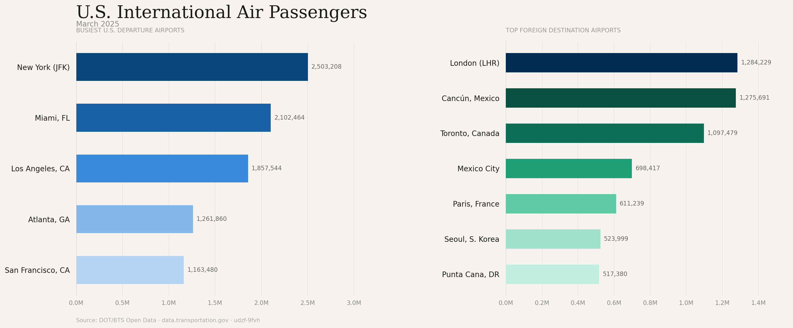
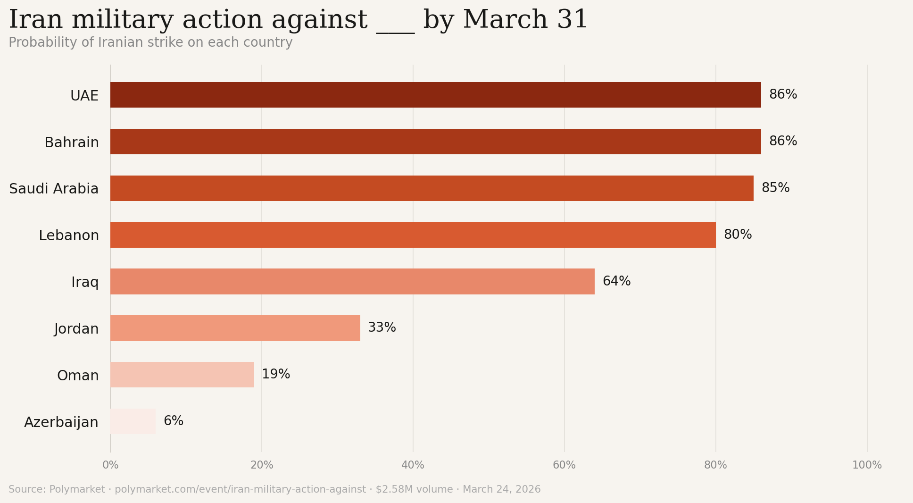
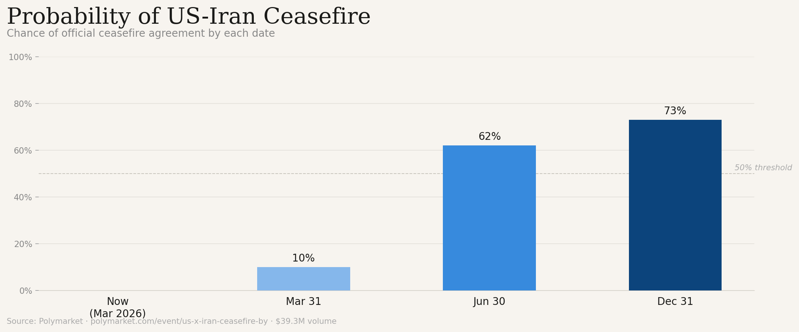
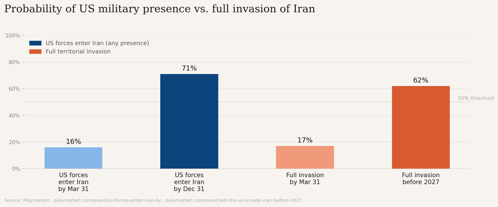

On the same Friday morning, three major American news outlets covered the same story. Iran threatens to target tourism sites worldwide. Read each one back to back you’d think they were describing different conflicts happening in different countries to different audiences. But they weren’t. They were all covering the same press conference from Iranian military spokesman Gen. Abolfazl Shekarchi.
Each outlet, whether consciously or not, filters the same facts through a lens shaped by its readership's fears, politics, and prior beliefs. However, to gauge a likely picture as to what is really going to happen data is needed.
So here’s what each outlet told you, and what the markets actually say.
The Right: Your Spring Break Is in Danger
"Iran threatened Friday to start targeting tourist sites worldwide," The New York Post reported before adding: this happened "just as spring break kicked off across the United States." The story quoted Iranian military spokesman Gen. Shekarchi warned that "popular tourism havens would no longer be safe for Tehran's enemies."
The New York Post frames an immediate and personal threat directly at American vacation plans. Unfortunately, it crumbles under a simple question - where do Americans actually go for spring break?

The chart above is simple. Americans domestically, travel to New York, Miami, Los Angeles, Atlanta and San Francisco during spring break. Internationally, Londer leads, followed by Cancun and Toronto. Not one of which are in the Middle East. The actual places data shows Iran will target.

Prediction markets reinforce the picture. The odds of the US officially declaring war on Iran sit at just 9% by year-end, with a full invasion priced at 19%. Traders aren't betting on a global terror campaign reaching Florida resorts or Mexican beach towns. They're pricing a contained regional conflict that most American spring breakers will watch on their phone by the pool.
The Post’s framing isn’t wrong that Iran made a threat. It’s wrong about who that threat is realistically aimed at. And who should actually be worried.
The Center: Actually, Kind of Right
The Hill played it much straighter. "Iran on Friday threatened to target recreational and tourist sites globally," it reported, "as the nation continues building missiles nearly three weeks after the U.S. and Israel launched joint strikes on the Middle Eastern country." It also noted that "the military operation in Iran has killed a number of top officials since the initial attack on Feb. 28, including Supreme Leader Khamenei, and targeted the nation's energy infrastructure and its weapons program."
No spring break hook. No crisis angle. Just the documented sequence of events.
Delphi Markets currently prices an 79% probability of military action against Iran continuing through March 31, consistent with The Hill's read that this is an ongoing conflict, not a singular news event.
However, it falls short in what it doesn’t ask: missiles are being built, officials have been killed, infrastructure has been targeted. But it stops there. The absence of what happens in the future leaves audiences with a conflict that feels open-ended by default.
Delphi Markets fills that gap. Yes, military action continues through March at 79%, but zoom out and the picture shifts. Traders price a 62% chance of a US-Iran ceasefire by June 30, rising to 74% by December 31. The crowd isn't betting on forever. It's betting on a grinding spring followed by a deal.

The data isn’t depicting endless war but it isn’t a clean resolution either. It is a conflict that grinds through spring before money starts betting heavily on a deal by summer.
The Left: Are Ground Troops Coming?
The New York Times wasn't interested in tourism threats. Its story centered on a different kind of danger: the one coming from Washington. "President Trump asserted on Thursday that he had no plans to commit ground forces to the U.S.-Israeli war in Iran," the Times reported, "even though he has acknowledged he is contemplating moves that could drag the military into land combat operations."
The paper made sure to quote Trump directly letting his words do the work. "I'm not putting troops anywhere," Trump told a reporter. Then came the headline: "If I were, I certainly wouldn't tell you."
This is the one section where Delphi Markets doesn't push back — it piles on. The "US forces enter Iran" market, with $26.6 million wagered, prices physical entry of US personnel at 65% by December 31, a number that has been climbing week over week as the Pentagon reportedly deploys up to 2,500 additional Marines to the region. Of the three outlets, the Times asked the one question traders are also asking.

The nuance is in what "entry" actually means. Crossing a border and conquering a country are two different bets. The dedicated invasion market, which requires a full military offensive intended to establish territorial control, sits at just 14% by March 31. Stretch the timeline to year-end and it climbs to 54%. The first outcome traders consider likely. The second, no longer unthinkable.
What all Three Miss
The Post, The Hill, and the Times each got something right. The Post was correct that Iran made a threat. The Hill was correct that the conflict is ongoing. The Times was correct to question Trump's intentions. None of them were lying.
But each one handed their reader a different war.
Prediction markets don’t have an audience to serve but a price to get right. And currently they have priced a story none of the three outlets fully told: a conflict that almost certainly continues through spring, probably reaching ceasefire by the end of year and likely putting some Americans on Iranian soil - though a full invasion remains unlikely.
Maybe not as reassuring, but definitely more honest.